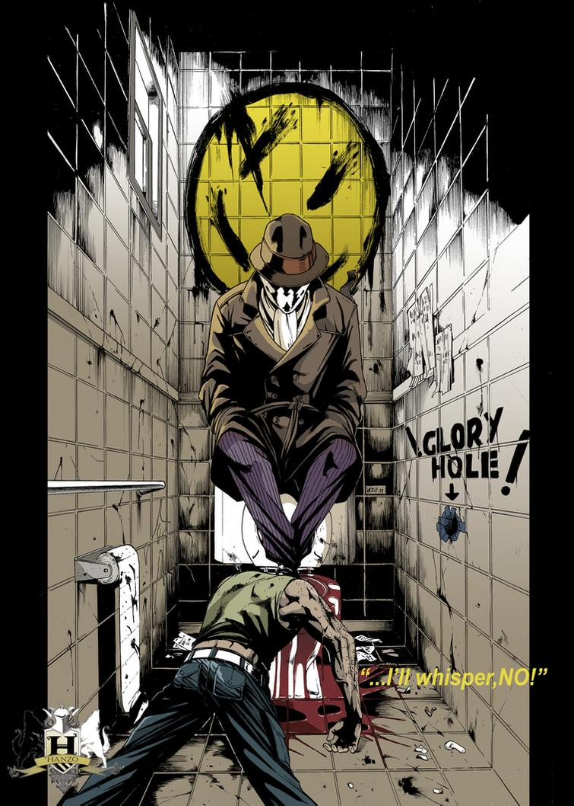

Karpintero
menu
LOREM
IPSUM
DOLOR
SIT
AMET
CONSECTETUR
ADIPISICING
ELIT
Catwoman: Selina Kyle y Su Historia. Articulo de Wikipedia.
Ene 04, 2021

Rorschach's Journal. Actualización Diaria.
Ene 05, 2021
Rorschach's Journal. Actualización Diaria.
Ene 04, 2021
Catwoman: Selina Kyle y Su Historia. Articulo de Wikipedia.
Ene 05, 2021
Rorschach's Journal. Actualización Diaria.
Ene 04, 2021
Rorschach's Journal. Actualización Diaria.
Ene 05, 2021
Rorschach's Journal. Actualización Diaria.
Ene 05, 2021